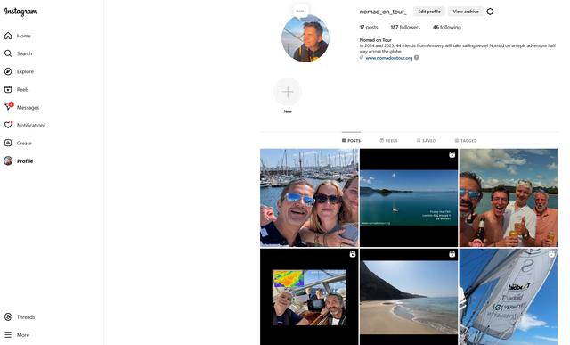

3 januari 2025
TG socials 2.0
Ondanks een paar gesmaakte Instagram posts in 2024 door de skipper, hebben we nog niet de influencer status bereikt die een grootse onderneming als de Tournée Générale waardig zou zijn. Vandaar dat Gen-Z het beheer van de social media overneemt van de boomer / kapitein. Inderdaad, Marilou en Amelie zorgen vanaf nu voor een massale toestroom aan likes, comments, re-posts en andere sociale feedback. We worden beroemd en de skipper een Ware BV 😜 die vervolgens als volleerde Jean-Marie Pfaff product-placement-gewijs aan een nieuwe carrière kan bouwen...

Allen daarheen dus: